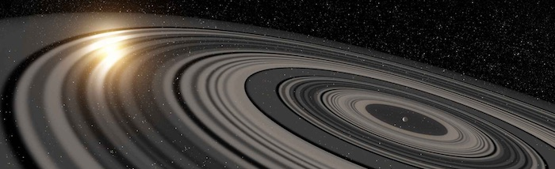

By constraining the physical and chemical processes that control the formation, internal structure and evolution of Earth and the other planets in our solar system we can begin to understand extrasolar planets and systems. For example, my work on rotating bodies and synestias has implications for the internal structure and detection of exoplanets. I am currently building on our previous work to consider planets with the wide range of masses and compositions we have found in other systems. Check back soon for more information.
All photos used on this site are either available under a creative commons license, or are the property of Brian Lock or NASA.